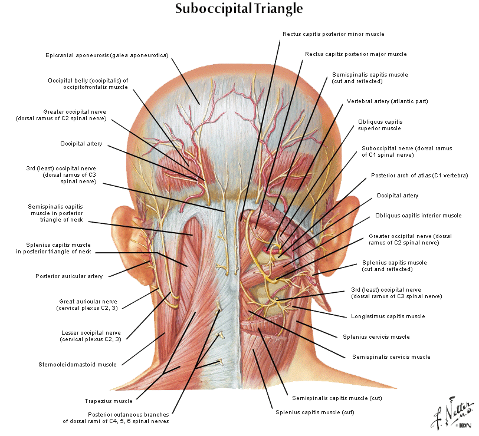
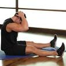
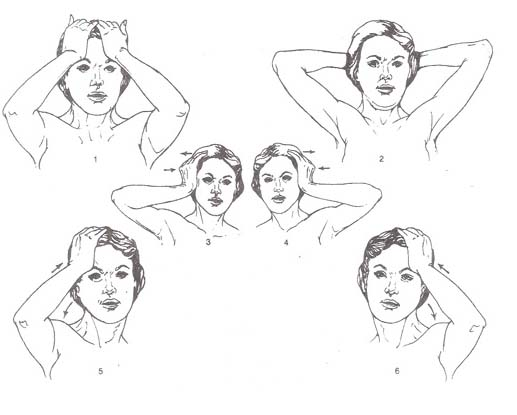
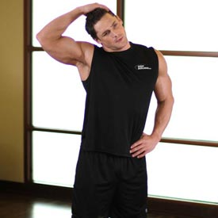
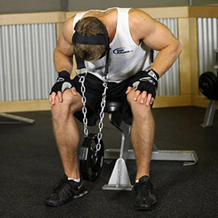
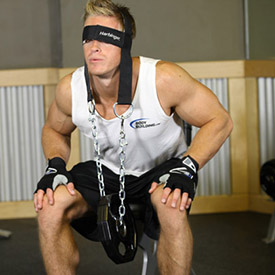

<!DOCTYPE html PUBLIC "-//W3C//DTD XHTML 1.0 Strict//EN" "http://www.w3.org/TR/xhtml1/DTD/xhtml1-strict.dtd">
<!--
Design by Free CSS Templates
http://www.freecsstemplates.org
Released for free under a Creative Commons Attribution 2.5 License

Name       : Open-Air
Description: A two-column, fixed-width design with dark color scheme.
Version    : 1.0
Released   : 20120818

-->
<html xmlns="http://www.w3.org/1999/xhtml"/>
<?php
session_start();
include('mygymdbConnect.php');
include('SignUp.php');
?>
<html>
    <head>
        <title> MyGym</title>
        <div style="position :absolute;top:20px;left:40px">
            <p><h2>MY<br/> 
                    GYM 
                    <br/></h2></p></div>
        <div style="position: absolute ;left:  200px; top: 20px;"> </div>
        <div style="position:absolute;top:37%;left:35%"/>
        <link href="http://fonts.googleapis.com/css?family=Oswald:400,300" rel="stylesheet" type="text/css" />         

        <link href="style.css" rel="stylesheet" type="text/css" media="screen" />
        <a href="home.php" style="text-decoration: none;color: black;font:serif;font-weight: bold;  ">Home |</a>
        <a href="About.html" style="text-decoration: none;color: black;font:serif;font-weight: bold;  ">About |</a>
        <a href="sign up.html" style="text-decoration: none;color: black;font:serif;font-weight: bold;  ">Sign up |</a>
        <a href="Activities.html" style="text-decoration: none;color: black;font:serif;font-weight: bold;  ">Activities |</a>
        <a href="Trainers.html" style="text-decoration: none;color: black;font:serif;font-weight: bold;  ">Trainers |</a>
        <a href="classes.html" style="text-decoration: none;color: black;font:serif;font-weight: bold;  ">Classes |</a>
        <a href="Training.html" style="text-decoration: none;color: black;font:serif;font-weight: bold;  ">Train |</a>   

    </head>

    <body>
        <div style="position: absolute;left: -400px">
    <table  cellpadding="10" cellspacing="10" height="400px" width="1200px">
        <tr><td></img></td>
            <td><b>Description</b><br></br>The muscular system of the head and neck is defined by two movements: One is the relatively fine movements of the muscles activating the sensory organs of the head; the other is by the grosser movements of the neck muscles, which allow those senses to be properly targeted.

The neck muscles are responsible for the bulk of gross motor movement in the muscular system of the head and neck. They move the head in every direction, pulling the skull and jaw against the shoulders,
spine, and scapula. These neck muscles are often paired. One such typical bifurcated strap-like muscle in the back of the neck connects the base of the skull to several vertebrae. These muscle pairs bend the head toward the chest and pull it erect, or turn the face to one side or the other. Additionally, some muscles of the neck aid in facial expressions, or help to open the mouth.
               
            </td></tr>
    </table></div>
        <div style="position: absolute;left: -200px;top: 500px" >
            <table border="2"  cellpadding="10" cellspacing="10" align="center">
                <tr><td><b>EXERCISES</b></td></tr>
                <tr><td></img></td>
                    <td><b>Chin To Chest Stretch</b>
                    
                        1-Get into a seated position on the floor.<br></br>
                        2-Place both hands at the rear of your head, fingers interlocked, 
                        thumbs pointing down and elbows pointing straight ahead.
                        Slowly pull your head down to your chest. Hold for 20-30 seconds.</td>
                </tr>
                <tr><td></img></td>
                    <td><b>Isometric Neck Exercise - Front And Back</b>
</br>1-With your head and neck in a neutral position (normal position with head erect facing forward), place both of your hands on the front side of your head.
</br>
2-Now gently push forward as you contract the neck muscles but resisting any movement of your head. Start with slow tension and increase slowly. Keep breathing normally as you execute this contraction.
</br>
3-Hold for the recommended number of seconds.
</br>
4-Now release the tension slowly.
</br>
5-Rest for the recommended amount of time and repeat with your hands placed on the back side of your head.
                        
                    </td>
                </tr>
                 <tr><td></img></td>
                     <td><b>Side Neck Stretch</b></br>
                    1- Start with your shoulders relaxed, gently tilt your head towards your shoulder.
                         </br>
                    2-Assist stretch with a gentle pull on the side of the head.   
                    </td>
                </tr>
                <tr><td></img><br></br>
                        </img>  </td>
                     <td><b>Seated Head Harness Neck Resistance</b>
                     </br>
                        
1-Place a neck strap on the floor at the end of a flat bench. Once you have selected the weights, sit at the end of the flat bench with your feet wider than shoulder width apart from each other. Your toes should be pointed out.
 </br>
2-Slowly move your torso forward until it is almost parallel with the floor. Using both hands, securely position the neck strap around your head. Tip: Make sure the weights are still lying on the floor to prevent any strain on the neck. Now grab the weight with both hands while elevating your torso back until it is almost perpendicular to the floor. Note: Your head and torso needs to be slightly tilted forward to perform this exercise.
 </br>3-Now place both hands on top of your knees. This is the starting position.
 </br>4-Slowly lower your neck down until your chin touches the upper part of your chest while breathing in.
 </br>5-While exhaling, bring your neck back to the starting position.
 </br>6-Repeat for the recommended amount of repetitions.
                    </td>
                </tr>
            </table>
        </div>
    </body>
</html>